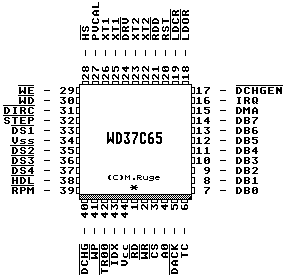

Previous
Next
TOC
Die Pinbelegung des Hades Floppycontrollers

Compatible with PD8080/8085, PD8086, 8088, 80286, 80386SX, 80386
and PD780 (Z80) microprocessors
On chip clock generation
Two XTAL oscillator circuits for 44-pin PLCC
Automatic write precompensation
- Disable option
- Pin selectable inner track values of 125 or 187 nanseconds
Integrated high-performance DPLL data separator
- Industry standard error rates of 10<E-9
- Data rates of 125, 250, 300, 500 Kbits/second and 1Mbit/second
- Option to select 150 Kbits/second FM and 300 Kbits/second MFM
data rates only
Enhanced host interface
- 20 LSTTL output drive capability
-
TTL Schitt trigger inputs
User programmable track stepping rate and head load/unload times
Supports four floppy or Micro Floppydisk drives with external decode
logic
Data transfer in DMA or non-DMA mode
Parallel seek operation on a maximum of four drives
Internal power up reset circuitry
Single +5V DC power supply
Kapitel Die Pinbelegung des Hades Floppycontrollers, Seite 1